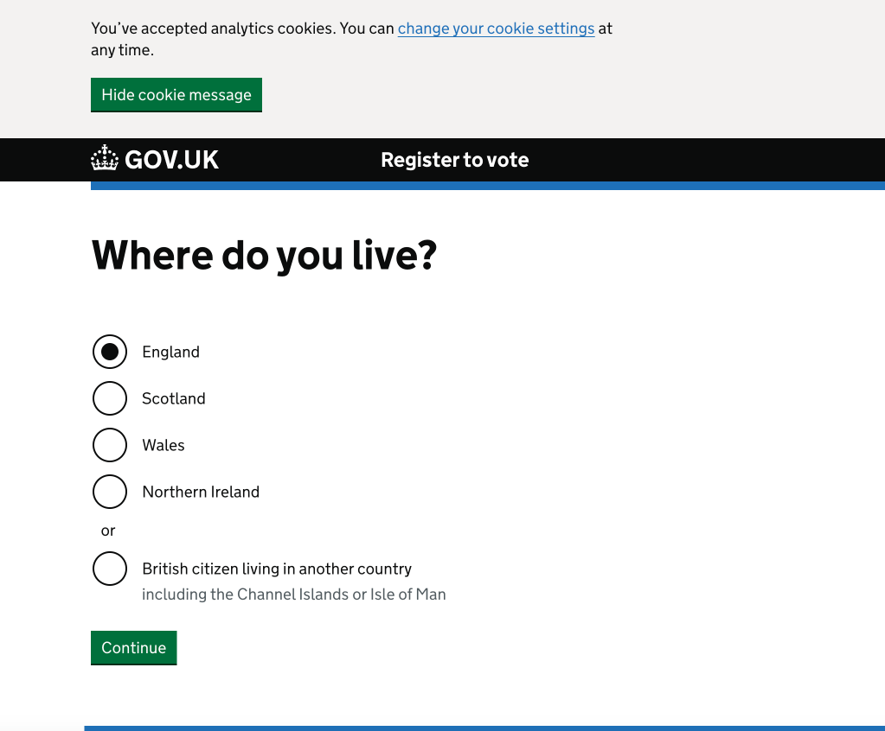
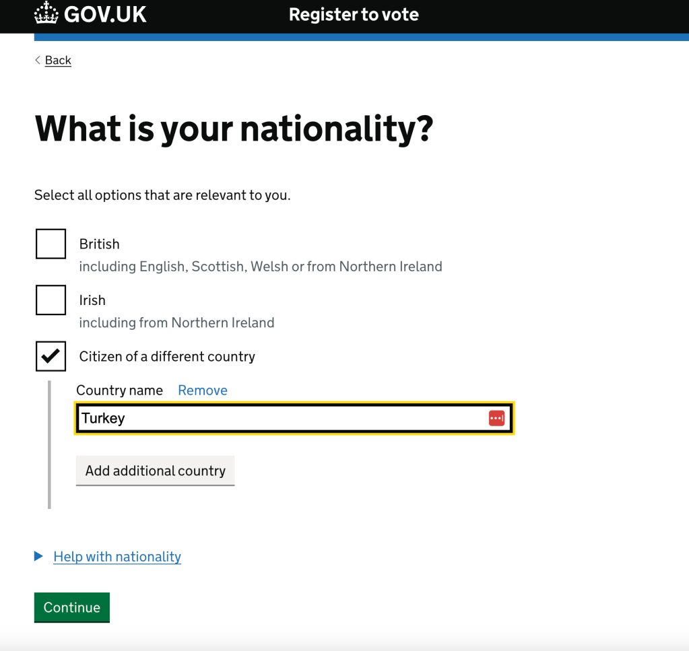
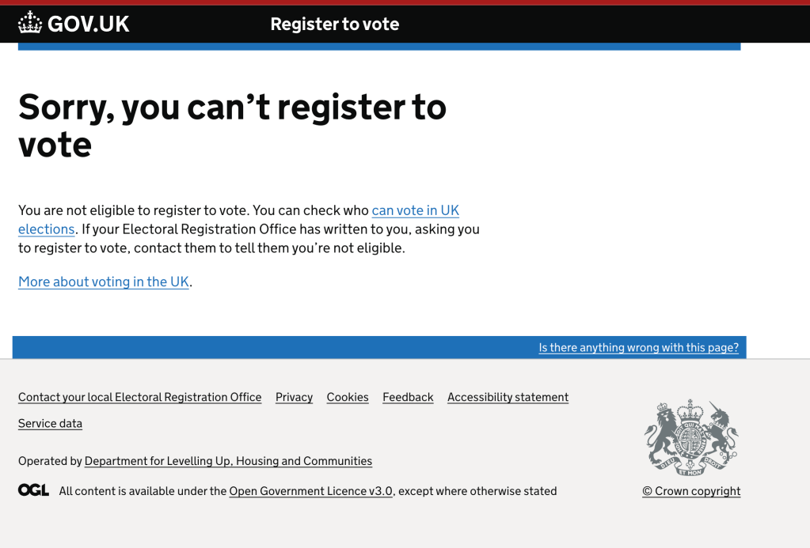
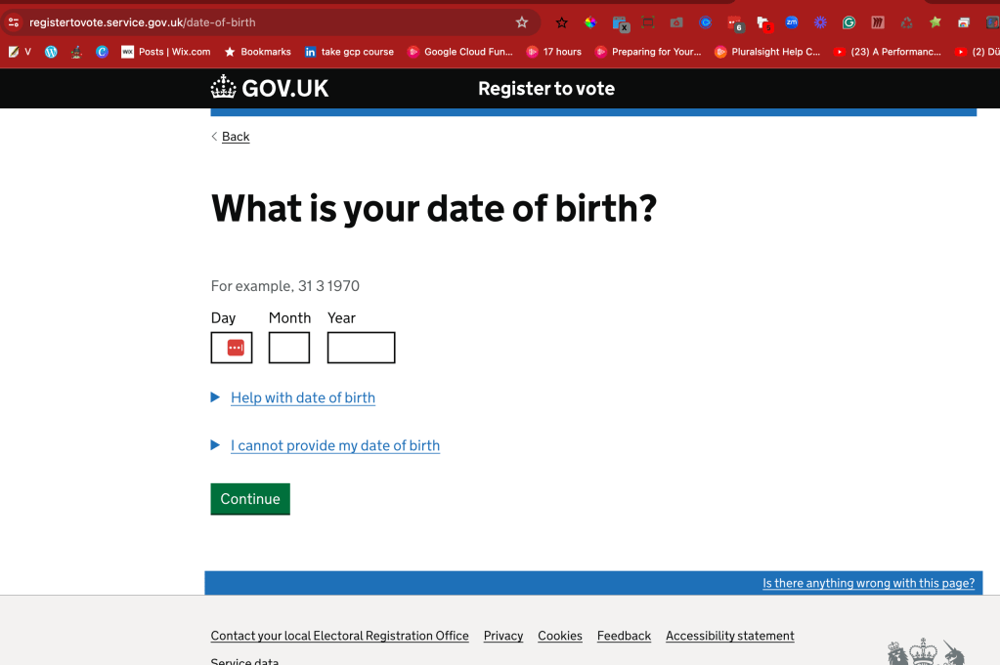

Register to Vote
https://www.gov.uk/register-to-vote



after passport it opens up

In the UK, individuals with Indefinite Leave to Remain (ILR) can register to vote under certain conditions. To be eligible to register to vote, you must be:
-
Aged 16 or over (or 14 or over in Scotland and Wales), though you can only vote when you're 18 or over, with some exceptions allowing voting from 16 in Scotland and Wales for specific elections.
-
A resident at a UK address.
-
A citizen of the UK, the Republic of Ireland, or a qualifying Commonwealth country. This includes countries that are part of the Commonwealth and have leave to enter or remain in the UK or do not require such leave.
Qualifying Commonwealth citizens are those who have permission to enter or stay in the UK or do not need such permission. This includes citizens from a wide range of countries across Africa, Asia, the Americas, Europe, and the Pacific. Citizens of the EU living in the UK are also eligible to register, with specific conditions applying to those living in Scotland or Wales.
EU citizens living in another EU country have the right to vote in local elections, a rule that applied to EU citizens resident in the UK while it was a member of the EU. Post-Brexit, changes have been made to the voting rights of EU citizens in local elections in England and Northern Ireland, effective after local elections in May 2024, depending on when the person moved to the UK and from which country.
For local elections in England and Northern Ireland, the rules for eligibility mirror those for UK Parliament elections, with exceptions for members of the House of Lords and EU citizens who meet the age and residency requirements. Scotland and Wales have extended voting rights for their devolved parliament elections and local elections to include all legally resident foreign nationals, not just EU nationals【5†source】【6†source】【7†source】.
To register, you can complete the process online or, if you're unable to do so, download a paper form. If you're living in Northern Ireland, you'll need to complete a paper application and send it to the Electoral Office for Northern Ireland【6†source】.
It's important to renew your registration every three years, and you should receive a reminder from your electoral registration office about three months before your registration is due to expire. If you don't renew your application, you'll have to register again【6†source】.
For the most accurate and updated information, please visit the official government websites or contact your local Electoral Registration Office.
why ?
Registering to vote is an essential step towards exercising your democratic right and having a say in shaping the future of your community and country. Here are several key reasons why it's important to register and participate in the voting process:
-
A Voice in Decision-Making: Voting allows you to express your opinions and choose representatives who make decisions on your behalf. It's a direct way to influence policies and laws that affect your daily life, from education and healthcare to environmental and economic policies【14†source】.
-
Influencing Policies and Laws: Through voting, you have the power to shape the direction of your community and country. It's an opportunity to support candidates and policies that align with your values and address the issues you care about most【14†source】.
-
Holding Leaders Accountable: Voting is a tool for holding elected officials accountable for their actions. If they are not fulfilling their duties or promises, voters have the power to elect new leaders who better represent their interests and values【14†source】.
-
Reflecting the Will of the People: Higher voter participation means election outcomes more accurately reflect public opinion. This creates a government that is more representative and responsive to its citizens【14†source】.
-
Honoring the Struggle for Suffrage: Many people fought hard for the right to vote, facing discrimination and hardships. By voting, you honor their struggle and contribute to the ongoing effort to create a more equitable society【14†source】.
-
Fostering Civic Engagement: Voting encourages further engagement with political issues, leading to a more informed and active citizenry. It's the starting point for participating in community organizations, discussions, and activism【14†source】.
Every vote matters, even in elections that seem decided or in states where one party is dominant. There are countless examples of elections decided by razor-thin margins. Beyond the presidential race, local and midterm elections significantly influence policies and representation at all levels of government【15†source】.
Voting is not just a right; it's a responsibility that gives you the power to shape your future and ensure your voice is heard. It's a key component of a functioning democracy, allowing citizens to choose their leaders and hold them accountable for their actions in representing the public's interests【13†source】【15†source】.
Engaging in the voting process is empowering, both personally and for the wider community. It's a tangible way to participate in democracy and effect change. If you're eligible to vote, taking the step to register and casting your ballot is one of the most impactful actions you can take【15†source】.
References
Certainly, here are the citations from the information provided:
-
"Why Voting is Important" from National Geographic explores the evolution of voting rights in the United States and emphasizes the impact of each vote【13†source】.
-
"Why Voting is Important: Your Voice Matters" by HeadCount highlights the significance of voting in democratic processes, including decision-making, policy influence, accountability, and civic engagement【14†source】.
-
"Why Is Voting Important? Election Experts Explain" from Well+Good discusses the importance of each vote, the power of voting to influence local and national elections, and the ongoing struggle for suffrage and equity in the voting process【15†source】.
These sources provide insights into why registering to vote and participating in elections is a crucial aspect of civic engagement and democracy.
Imported from rifaterdemsahin.com · 2024